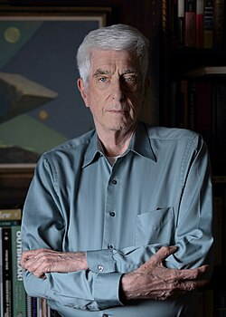

Jacques Vallée
Computer scientist and astronomer, born 1939

Born in Pontoise, France, he began as an astronomer at the Paris Observatory and in 1963 helped make the first computerized map of Mars for NASA. He moved to Chicago to work with J. Allen Hynek, and later worked on the ARPANET, a forerunner of the Internet, before a long career in venture capital. 1
Starting out with the idea that UFOs were extraterrestrial craft, he concluded by 1969 that the explanation was too narrow, and has since compared UFO encounters with folklore, religious apparitions and psychic phenomena. Because he rejects both the skeptics' and the space-visitor views, he calls himself a heretic among heretics. 1
He was the model for Claude Lacombe, the French scientist in Close Encounters of the Third Kind, and donated his research files to Rice University's Archives of the Impossible. He wrote his second UFO book with his wife, Janine, who died in 2010. 1
Open in the interactive Watcher
Related
- Passport to Magonia Wrote Passport to Magonia
- NIDS founded Associated with NIDS
- Anatomy of a Phenomenon Book, 1965
- Challenge to Science Book, 1966
- The Invisible College Book, 1975
- The Edge of Reality Book, 1975
- Messengers of Deception Book, 1979
- Dimensions Book, 1988
- Confrontations Book, 1990
- Revelations Book, 1991
- UFO Chronicles of the Soviet Union Book, 1992
- Forbidden Science Book, 1992
- Forbidden Science 2 Book, 2009
- Forbidden Science 3 Book, 2016
- Forbidden Science 4 Book, 2019
- Forbidden Science 5 Book, 2023
- Forbidden Science 6 Book, 2025
- Forbidden Science 7 Book, 2026
- Trinity: The Best-Kept Secret Book, 2021
- Wonders in the Sky Book, 2009
Sources
- Jacques Vallée Wikipedia